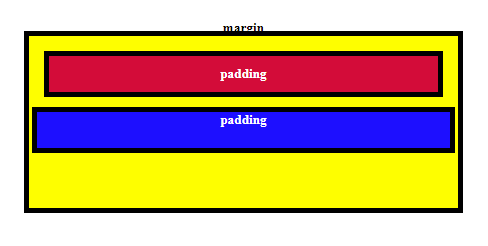

CSS and Shape Boundaries
Borders, Margins, and Padding
What do these three properties have in common?
Margin, border, and padding are all ways to define and highlight the boundaries of a shape. Though they can look superficially similar in many conditions, they function separately.
Let's start with border.
Border defines the boundary of the shape itself and what it looks like. It highlights the edge in colour, or can define what shape the edge is.
How may we use borders?
A conventional border has the same thickness in all dimensions, is typically a solid colour, and retains the rectangular shape.
On border shapes:
We can change the shape of the border by altering its radius, which is defined by its corner. A radius of 50% will see two corners meet in the middle, making a circle:
We can use lower percentages to change the shape to a rounded tile, and to keep consistency across multiple shapes. No matter what size we make the shapes, their overall proportions remain the same.
The following shapes have different sizes, and a border radius of 35%:
But we don't have to use percentages. An absolute number will give us a consistent size to the corner. The shapes individually may vary, but their boundaries relative to each other are consistent.
Now see how they are compared when given a set border radius of 50px, instead:
Just keep in mind that if you make your elements smaller (such as if they are using relative size in a mobile display), an absolute border size may reduce the border to a circle once small enough! At 50px border radius, any image 100px or smaller will become a complete circle.
On border sides:
We don't have to have a border look the same on all sides. In fact, changing the border on individual sides gives us a great deal of control, and allows us to create more complex shapes through illusory magic!
I can place a more prominent border on only the top edge to turn this circle into a Voltorb:
...though note that the shape needed to be made only half-height to compensate.
This is because the border exists outside of the shape, and so an uneven border distorted the overall shape as viewed by the user.
The radius of the border is for the border itself; so if the border is a significantly different shape than the base shape it surrounds, the radius property is off-centre from the shape's 'actual' centre.
Now let's used what we've learned and make borders of different thickness and colours:
Notice how the transition between the borders' many sides is evenly split, from corner to corner? It's very predictable, and we can abuse that, too.
The mad thing about that last part is that if we make the border colour transparent, we can create shapes that don't look like boxes at all:
What we have here is a shape with no dimensions (so the border is the only thing visible), no top border (so the side's corners meet the top), a full-height bottom border with colour (the triangle we can actually see), and lastly, transparent sides, half the width of our bottom border (this cuts the triangle shape).
Once you start layers multiple shapes together, each with their own fills, border colours, and border shapes, you can assemble complex images out of pure CSS!
...You know, if you wanted. If masochism was your bread and butter. You could.
Margins and padding.
Margins and padding seem to have similar roles at first - they define how much space is around the boundary. Though they define different space, they can be used in similar ways with the same syntax.
Margins define how much space is outside of the boundary. Margin around the shape means the whole shape will retreat from the other elements around it, including the screen. How much gap is there between our cube and the edge of the screen?
Padding define how much space is inside of the boundary. Padding around the content of a shape (such as text) means the border will retreat from its contents, based on padding. How much gap is there between our cube's border, and the text content it contains?
Let's do some comparisons.
First, let's look at some shapes with no margins or padding at all:
In our example, we can't see the yellow box at all, because the red and blue boxes completely fill its bounds. The title 'margin' is also obscured behind the content of the red box. These kids need more space!
So let's give them a default amount of space, so we can see what we're doing. 10px for each should be enough:
Ahh, much better! It's like I can breathe again.
That shows you why we need padding and margins, but let's demonstrate why they are different.
Juicier padding:
Remember that padding is responsible for how far a shape's boundary (our border) is from its own contents (our text).
Juicier margins:
In contrast, our margins are responsible for how far a shape's boundary (our border) is from other content (our red and yellow boxes).
Defining spaces
By default, padding and margin apply to all sides equally. However, we can apply them to specific sides. Remember that we defining the boundary's space, and not it's position. We add boundary space to the left, and our shape 'appears' to shift right:
Or we can define all of them one after another on one line, clockwise from the top:
The cheeky thing with page elements and how they interact with CSS is that, sometimes, they can look like they're doing the same thing. And often, the same results can be gained from different areas of CSS. That means sometimes, you don't know if your padding on a container is too large, or the margins on its contents too large; maybe you need to add a padding at the end of your page, or maybe you add a margin to your footer.
Thus, many of us shall surely go mad, gazing into the stream of .s and #s, the { } - wondering where it all went wrong.
Anyway, good luck with that, is what I'm saying.
Maybe don't make that incredibly complex image out of CSS, after all.